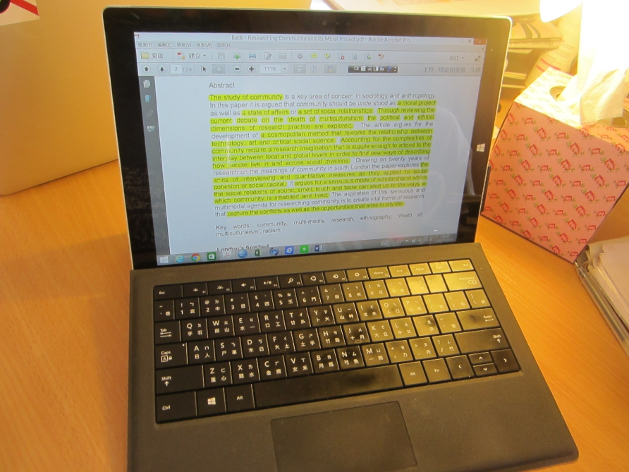
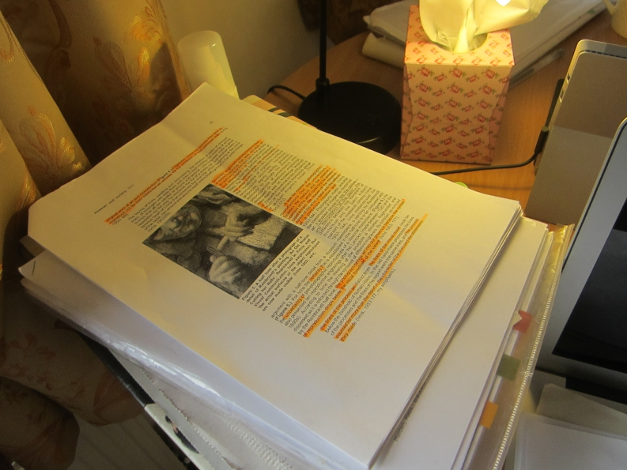

An article titled On the Materiality of Writing in Academia or Remembering Where I Put My Thoughts1 was published in the LSE Review of Books recently. Meier (2016) discusses the scattered nature of reading notes. Full articles are often consolidations of bits and pieces written in various places and contexts, and the processes of idea generation are inherently messy.
This feeling of messiness was very palpable when I did ethnography in C's home. First of all, texts were transformed to different formats and relocated constantly2. Reading materials were processed in different locations and settings, and it was difficult to develop a systematic approach to organize these texts.
Secondly, it was impossible to contextualize some studies into a single category. C dealt with this hardship by copying the same electronic file into different folders on her laptop, but she did not employ the same strategies to process materials in the print format.
Researcher: Do you separate the [print and electronic] articles that have been read and haven't been read?
C: Not really.
Researcher: So do you place them in random locations?
C: I know how they should be ordered in my mind. I categorize them by subject [on the computer], but I can't pinpoint some articles to single categories because many themes are associated with one another. I just process them based on my intuition.
Researcher: How can you tell if a paper has been read then?
C: I can see the difference.
Researcher: Oh, the highlights and notes!
Instead of coming up with a system to tackle the various reading materials and notes, C recognized her own engagement with the text by the visual traces. Regardless of the format, there would be cues which indicated cognitive practices.


The need to record and organize reading notes is actually shared by the humanity for centuries. Intellectuals in the past, such as Marcus Aurelius, Petrarch, and Montaigne kept commmonplace books, which are collections of ideas, observations, and quotes acquired in various contexts3. Moving to the present age, there are a plethora of knowledge databases which people can employ on their computers and other devices. Debates over which knowledge management system is the most effective one usually generate vibrant discussions.
Instead of fussing over clear organization methods, C identified the materials of relevance by bodily engaging with it, leaving highlights and notes. In a different article written by Meier (2016), she mentions marking the key passages in Hannah Arendt's On Revolution (1963) with yellow post-it notes. Whether or not she has collected these notes and created visible connections in a different place is not revealed, but leaving physical traces of reading notes has enhanced her understanding of the book and helped her draw connections with ideas presented elsewhere.
The method of leaving visual cues in the reading pieces does not apply to everyone's reading and note-taking practices. Some people may prefer tagging and categorizing notes in a comprehensive system. Still, it is fascinating to observe how an academic like C read and take notes.
http://blogs.lse.ac.uk/lsereviewofbooks/2016/02/26/the-materiality-of-research-on-the-materiality-of-writing-in-academia-or-remembering-where-i-put-my-thoughts-by-ninna-meier/ ↩
https://debbyca.github.io/2016/03/02/reading-materials/index.html ↩
http://thoughtcatalog.com/ryan-holiday/2013/08/how-and-why-to-keep-a-commonplace-book/ ↩
http://blogs.lse.ac.uk/lsereviewofbooks/2016/03/08/academic-inspiration-on-connectivity-or-what-reading-hannah-arendt-taught-me-about-the-relatedness-of-things-by-ninna-meier/ ↩